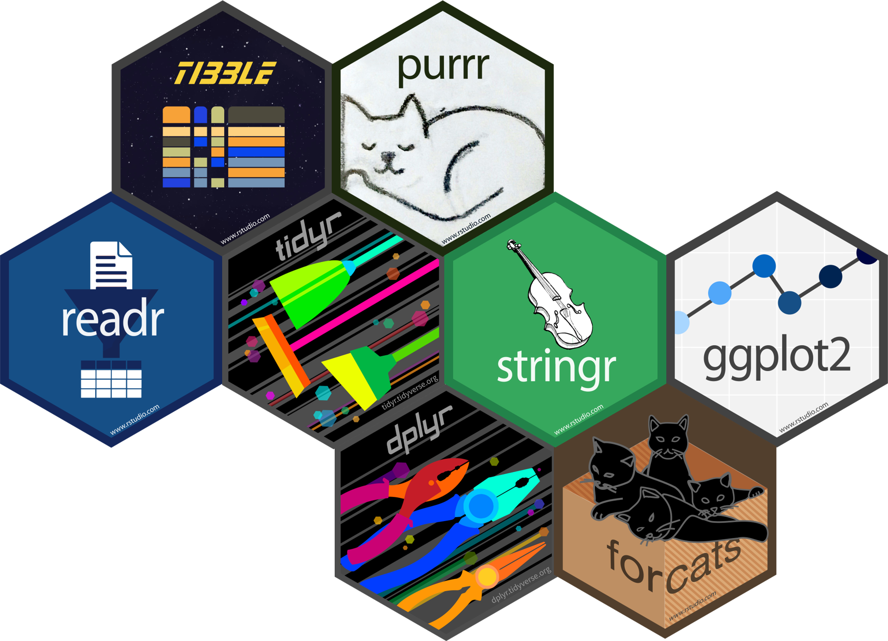
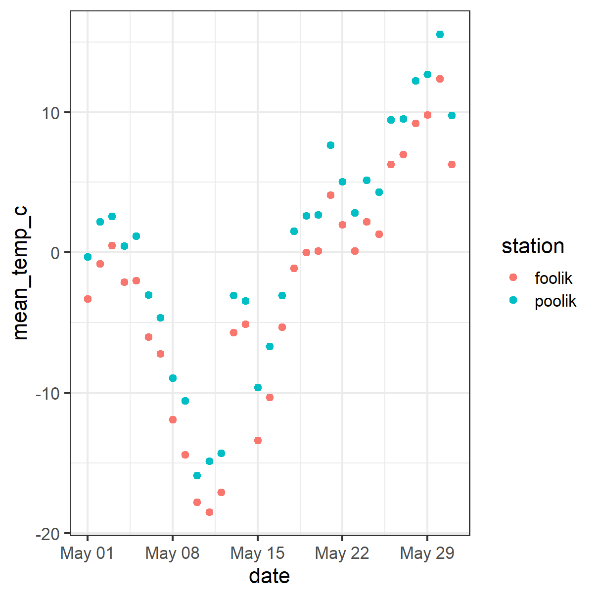
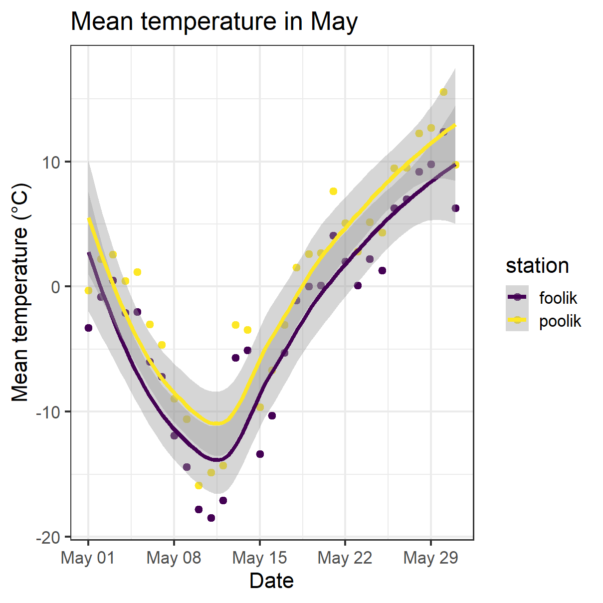

library(tidyverse)
#> ── Attaching core tidyverse packages ──────────────────────── tidyverse 2.0.0 ──
#> ✔ dplyr 1.2.0 ✔ readr 2.2.0
#> ✔ forcats 1.0.1 ✔ stringr 1.6.0
#> ✔ ggplot2 4.0.2 ✔ tibble 3.3.1
#> ✔ lubridate 1.9.5 ✔ tidyr 1.3.2
#> ✔ purrr 1.2.1
#> ── Conflicts ────────────────────────────────────────── tidyverse_conflicts() ──
#> ✖ dplyr::filter() masks stats::filter()
#> ✖ dplyr::lag() masks stats::lag()
#> ℹ Use the conflicted package (<http://conflicted.r-lib.org/>) to force all conflicts to become errorsIntroduction to the tidyverse
Scientific workflows: Tools and Tips 🛠️
2024-02-15
What is the tidyverse?

The tidyverse is an opinionated collection of R packages designed for data science. All packages share an underlying design philosophy, grammar, and data structures.
www.tidyverse.org
Tidyverse core packages

Why the tidyverse?
Basic idea: Make data analysis efficient and intuitive
- Write code that is easy to read, write and maintain
- More time for data interpretation
- Tidyverse is actively developed and has a large community.
Today
Overview of
- most important packages and functions
- how they work together in a data analysis workflow
- underlying principles of the tidyverse
I can’t show you everything. But the tidyverse has an excellent documentation and cheatsheets.
Most important readr functions

read_csvto read comma delimited filesread_tsvto read tab delimited filesread_delimto read files with any delimiter
All read_* functions return a tibble.
Example with arctic temperature data
Data modified from lterdatasampler
arc_weather <- read_csv(file = "data/arc_weather.csv")
arc_weather
#> # A tibble: 365 × 3
#> date foolik_mean_temp_c poolik_mean_temp_c
#> <date> <dbl> <dbl>
#> 1 1988-06-01 8.4 11.8
#> 2 1988-06-02 6 8.90
#> 3 1988-06-03 5.8 8.14
#> 4 1988-06-04 1.8 3.95
#> 5 1988-06-05 6.8 9.81
#> 6 1988-06-06 5.2 8.74
#> 7 1988-06-07 2.2 6.11
#> 8 1988-06-08 9.4 12.1
#> 9 1988-06-09 13.1 16.5
#> 10 1988-06-10 17.7 20.9
#> # ℹ 355 more rowsAdvantages of readr
Faster than
read.table/read.csvBetter defaults than base R (e.g. guessing of data types)
Returns tibbles
Tidyverse packages for other data types:
readxlfor Excel fileshavenfor SPSS, SAS, and Stata filesgooglesheets4for Google sheets- …
What is tidy data?

A ggplot showcase


A ggplot showcase

A ggplot showcase

Advantages of ggplot
- Consistent grammar
- Flexible structure allows you to produce any type of plots
- Highly customizable appearance (themes)
- Many extension packages that provide additional plot types, themes, colors, animation, …
- Find a list of ggplot extensions here
- Perfect package for exploratory data analysis and beautiful plots
Basic ggplot
Basic idea: Stack layers of the plot on top of each other with +
arc_weather_may <- filter(arc_weather,
month(date) == 5)
ggplot(data = arc_weather_may,
aes(
x = date,
y = mean_temp_c,
color = station
)) +
geom_point()- aesthetics define how data variables are mapped onto plot properties
- geoms define the type of plot (e.g. points, lines, bars, …)

Basic ggplot
- Gplot offers many more customization options and layers
- Works well with the pipe
|>
arc_weather |>
filter(month(date) == 5) |>
ggplot(aes(
x = date,
y = mean_temp_c,
color = station)) +
geom_point() +
geom_smooth() +
labs(
title = "Mean temperature in May",
x = "Date",
y = "Mean temperature (°C)") +
scale_color_viridis_d()